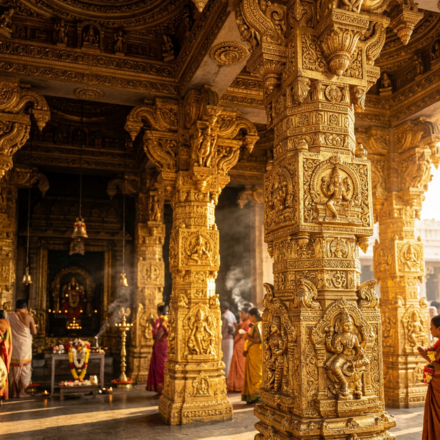

The Divine World of
Hindu Temples
A comprehensive deep-dive into the spiritual heart, ancient science, living rituals, and architectural genius of India's most sacred spaces — told simply, beautifully, and completely.
What is a Hindu Temple?
Understanding the concept of a Mandir goes far beyond religion — it is architecture, philosophy, science, and art in perfect unity.

A Hindu temple is far more than a building. Known as Mandir, Devasthana, or Devalaya (the abode of God), it is a living cosmological symbol — a physical model of the entire universe constructed according to precise sacred mathematical formulas documented in the ancient Vastushastra and Agama Shastras.
When a devotee enters a temple, they symbolically re-enter the cosmos itself — progressing from the outer world (ordinary consciousness) through successive enclosures into the innermost sanctum (Garbhagriha — literally "womb-chamber") where the divine resides in pure, concentrated form.
Historically, temples were not only sacred spaces. They functioned as centres of education, art, music, dance, economy, governance, and community life — the complete beating heart of Indian civilization for 2,000+ years.
"The Mandir is not a house we build for God. It is a doorway God leaves open for us — so that we may find our way back to the silence within ourselves that has always been divine."— Adi Shankaracharya, Bhaja Govindam
Cosmic Map in Stone
The temple's floor plan is a mandala — a diagram of the entire cosmos. The central Garbhagriha represents the cosmic womb where creation begins. Moving outward, each successive hall represents a lower dimension of consciousness — the physical journey through the temple is a spiritual journey inward.
Vastu Shastra
Every temple is precisely oriented — usually facing east to receive the sun's first rays on the divine idol. The mathematical ratios of width, height, and depth are prescribed down to finger-widths in the Vastu Shastra. This creates structures that exist in perfect mathematical harmony with natural forces.
Community Centre
Ancient temples ran schools (Gurukuls), hospitals, granaries, musical conservatories, dance academies, and courts of justice within their precincts. Temples collected taxes, managed irrigation systems, and were the economic engines of their communities — a complete civilization in miniature.
The Architecture of the Divine
Every element of temple architecture encodes a precise spiritual and scientific meaning. Nothing is decorative — everything is intentional.
Shikhara / Gopuram (Tower)
The temple tower represents Mount Meru — the cosmic mountain at the centre of the universe in Hindu cosmology. Its upward thrust toward the sky represents the human aspiration toward the divine. In the North Indian style, the Shikhara curves inward (Nagara). In the South, the Gopuram rises as a stepped pyramid (Dravidian).
Gopuram Gateway
The ornate gateway towers of South Indian temples are covered in thousands of painted sculptures of gods, demons, saints, and cosmic scenes — representing the entire range of existence that the devotee must traverse before reaching the divine centre. Entering the temple through a Gopuram is a symbolic birth into the sacred world.
Garbhagriha (Inner Sanctum)
The smallest, darkest room in the temple — the inner sanctuary — is the most sacred. The deliberate dimness and lack of decoration focuses the mind completely on the divine idol within. The term "Garbhagriha" (womb-chamber) indicates this is the source from which the divine energy of the entire temple radiates outward.
Mandapa (Hall)
The columned halls (Mandapas) that precede the inner sanctum are spaces for congregation, music, dance, and discourse. The Natamandira (dance hall) was where classical dance — itself a sacred offering — was performed before the deity. The carved pillars of ancient Mandapas are encyclopedias of mythology, ethics, and divine beauty.
Temple Tank (Pushkarini)
The sacred water tank adjacent to virtually every South Indian temple serves for ritual purification before entering the temple. The tank's waters are consecrated with mantras and the collected blessings of centuries of worship. Bathing here is considered equivalent to bathing in all sacred rivers simultaneously.
The Temple Bell (Ghanta)
The large bronze or brass bell hung at the temple entrance is struck by devotees as they enter. Scientifically, the specific alloy and shape produces a sound that resonates at 7 seconds — proven to simultaneously activate both hemispheres of the brain and induce a meditative theta-wave state. This is not coincidence — it is ancient neuro-acoustic engineering.
The Sacred Science of the Kalasha
The Kalasha — the pot-shaped finial at the very top of the Shikhara — is not merely decorative. It is made of a specific copper-brass alloy carefully described in the Agama Shastra, and contains consecrated water, specific herbs, and inscribed copper plates. Modern electromagnetic studies have found that the Kalasha acts as a resonant antenna for specific frequencies, concentrating and amplifying the devotional energy generated within the temple complex.
Sacred Rituals — The Daily Divine Schedule
Hindu temple worship follows a precise daily timetable called the Puja schedule — treating the deity as a living royal being who wakes, eats, rests, and sleeps.
Mangala Aarti (Dawn)
The first puja of the day — conducted before sunrise — wakens the deity. The inner sanctum is opened, lamps lit, and gentle wake-up songs sung. Only the most devoted pilgrims attend this early puja, which carries the freshest, most powerful spiritual charge of the day.
Abhishekam (Sacred Bath)
The sacred bathing of the deity with Panchamrut (five nectars — milk, curd, honey, ghee, and sugar) followed by water is the most intimate ritual act in temple worship. The five substances correspond to the five elements and five senses — the offering represents the complete surrender of one's sensory existence.
Shringar (Adornment)
The deity is dressed in fresh silk garments, adorned with gold and gemstone jewellery, garlanded with specific flowers prescribed for each deity, anointed with sandalwood paste, and presented as a complete divine being in royal splendour for the day's darshan.
Bhog / Naivedya (Food Offering)
Up to 56 varieties of food (Chappan Bhog) are offered to the deity at the midday meal — cooked in the temple kitchen using sacred recipes, offered with specific mantras, and then distributed as Prasad to waiting devotees. The food is believed to carry the divine's direct blessing after the offering.
Aarti (Light Offering)
The Aarti ceremony — waving a multi-flame lamp in a specific clockwise circular motion before the deity — is accompanied by bell-ringing, conch-blowing, and devotional singing. The circling lamp symbolises offering the entire solar system to the divine. The combined sound is scientifically shown to create a measurable energy shift in the space.
Pradakshina (Circumambulation)
Walking clockwise around the sanctum keeps the divine always on your right — the side of reverence in Indian tradition. Each circumambulation is a meditation in motion. The number of circles prescribed (3, 7, 11, 21, or 108 depending on the deity and occasion) each carry specific symbolic significance.
Pushpa Puja (Flower Offering)
Each flower offered has specific significance: Lotus for Lakshmi and Vishnu (purity from mud), Bilva leaves for Shiva (the three leaflets represent the three Gunas surrendered), Marigold for Durga (the brilliant orange represents the fire of devotion), Jasmine for Krishna (fragrance representing divine love spreading in all directions).
Shayana Seva (Night Rest)
The final puja of the day lovingly prepares the deity for sleep — the inner sanctum is dimmed, a final lamp waved, lullaby-like devotional songs sung, and the deity's curtain gently drawn closed. This tender anthropomorphic relationship between devotee and divine is the living heart of the Bhakti tradition.
The Science Hidden in Sacred Tradition
Modern science is only beginning to validate what ancient temple builders encoded in stone, sound, and ritual thousands of years ago.
7-Second Bell Resonance
Ancient temple bells are made from an alloy of 5 metals (bell metal) in precise proportions. When struck, they resonate for exactly 7 seconds — the duration scientifically proven to simultaneously activate both brain hemispheres and induce a theta-wave state (the state of meditation and deep learning). This was engineered, not accidental.
OM = Earth's Frequency
The chanting of OM (432 Hz) matches the measurable electromagnetic frequency of Earth's Schumann Resonance (7.83 Hz × harmonics). Modern neuroscience confirms that certain chanting frequencies demonstrably reduce cortisol (stress hormone) by up to 65% and increase dopamine and oxytocin. The effect is physiological, not merely psychological.
Copper Underground Yantra
Every temple sanctum has a copper Yantra (sacred geometric diagram) buried beneath it at consecration. Copper is one of the best conductors of electromagnetic energy. This Yantra acts as a resonant focal plate that concentrates and stabilises the specific energy field generated by the combination of mantras, rituals, and devotional energy over centuries.
Sacred Plants as Medicine
Tulasi (Basil) — Vishnu's sacred plant — is a proven adaptogen that reduces anxiety and inflammation. Bilva (Bael) — Shiva's sacred leaf — contains compounds with powerful antibacterial and antidiabetic properties. Neem (used in Vishnu temple offerings) is one of the most potent natural antibiotics known. These prescriptions were both sacred and medical.
Shadow-Free Architecture
The 216-foot Brihadeeswara Temple tower casts no shadow at noon due to precise astronomical alignment built into its taper angle and orientation. The Shore Temple at Mahabalipuram was aligned to the winter solstice sunrise so the first rays fall directly on the Shivlinga. These were not guesses — they were the product of advanced astronomical mathematics.
108 — A Cosmic Code
The number 108 is encoded throughout Hinduism — 108 Upanishads, 108 beads in a mala, 108 divine names. Astronomically: the distance from Earth to Sun = 108 × Sun's diameter; Earth to Moon = 108 × Moon's diameter. The number 108 connects earth, moon, sun, and the sacred in a single mathematical constant — making it literally a cosmic code.
"Our ancestors did not simply believe in the sacred — they measured it, mapped it, and built it in stone. What we call 'ancient superstition' is increasingly proving to be 'ancient precision' as modern instruments finally catch up."— Dr. V. Ganapati Sthapati, Master Temple Architect
The Six Grand Styles of Temple Architecture
India's astonishing regional diversity produced at least six distinct temple architectural traditions — each a complete aesthetic universe in itself.
Nagara (North India)
Curvilinear Shikhara resembling mountain peaks. Examples: Khajuraho, Lingaraja, Kedarnath, Somnath.
Dravidian (South India)
Tall pyramidal Gopurams covered in colourful sculptures. Examples: Meenakshi, Srirangam, Brihadeeswara.
Vesara (Deccan)
Hybrid style blending North and South elements. Examples: Belur, Halebid, Pattadakal (Chalukya-Hoysala).
Kerala Style
Sloped copper roofs adapted for heavy monsoon. Examples: Guruvayur, Padmanabhaswamy, Aranmula.
Rock-Cut Temples
Entire temples carved from single living rock. Examples: Ellora Kailasa, Shore Temple, Elephanta Caves.
Modern Marble Style
Contemporary with Italian marble, traditional form. Examples: Akshardham Delhi, Prem Mandir, Birla Mandirs.
The Sacred Pilgrimage — Step by Step
Tirtha Yatra (pilgrimage) is not merely travel — it is a complete inner journey. Here is how to do it with full understanding and maximum spiritual benefit.
Sankalpa — The Sacred Resolve
Before departure, make a formal mental declaration (Sankalpa) of your pilgrimage purpose — whether healing, gratitude, guidance, or liberation. A clearly held intention amplifies every experience that follows. The Sankalpa is the spiritual ignition of the pilgrimage.
Purification — Body and Mind
Observe at least three days before the pilgrimage of vegetarian eating, early rising, reduced speech, and if possible, a partial fast. This is not punishment — it is tuning the instrument of your body and mind to the higher frequencies of the sacred site you are about to enter.
Sacred Snan — The Ritual Bath
At every sacred river, tank, or kund on the route — take a physical bath with mantras. Water is the great purifier physically and subtly. Ancient tradition prescribes this specifically because sacred bodies of water near major temples have measurably different mineral and energetic composition than ordinary water.
Darshan — The Sacred Exchange
Stand before the deity with eyes open, inner chatter silenced, and full presence offered. Darshan (divine sight) is an exchange — the devotee sees the divine, and the divine sees the devotee. This is not metaphorical — it is the precise moment of sacred contact that the entire pilgrimage has been building toward.
Pradakshina — Circumambulation
Walk clockwise around the sanctum — 3, 7, 11, or 21 times depending on the tradition. Keep the divine always on your right. Each circle integrates the experience more deeply and builds the accumulated sacred energy of the visit. The body's movement encodes the experience in muscle memory and cellular consciousness.
Prasad — The Divine Gift
Receive the sacred Prasad (food blessed by the divine's presence) and consume it there or shortly after. Prasad is not merely symbolic — it is the divine energy in physical form, transferred through the ritual of offering and returned through the ritual of sharing. This completes the closed circuit of sacred exchange.
The Four Most Sacred Pilgrimage Circuits
Char Dham: Badrinath (Vishnu) · Dwarka (Krishna) · Puri Jagannath · Rameshwaram (Shiva) — one pilgrimage visiting all four cardinal sacred sites of India. | 12 Jyotirlingas: Shiva's self-manifested light in 12 sacred sites across India — from Somnath in the west to Ramanathaswamy in the south. | 51 Shakti Peethas: Goddess Sati's body parts falling in 51 locations across the subcontinent — each a supreme Devi shrine. | 108 Divya Desams: The 108 sacred Vishnu shrines praised by the Alvar saints in 4,000 holy verses of the Divya Prabandham.
The 12 Jyotirlingas — Light of Shiva
The Jyotirlingas are 12 sacred sites where Lord Shiva manifested as an infinite column of light — each one a direct physical manifestation of divine consciousness.
Somnath
Gujarat — First Jyotirlinga, Lord of the Moon. Rebuilt 17 times after destruction. The eternal survivor.
Mallikarjuna
Srisailam, Andhra — Jyotirlinga + Shakti Peetha. Shiva and Parvati together on Nallamala hills.
Mahakaleshwar
Ujjain, MP — Shiva as Master of Time. The only south-facing Jyotirlinga. Bhasma Aarti at dawn.
Omkareshwar
MP — Island shaped like OM. Two lingas: Omkareshwar and Mamleshwar count as one Jyotirlinga.
Kedarnath
Uttarakhand — Himalayan Jyotirlinga at 3,583m. Accessible only 6 months/year. Pancha Kedar.
Bhimashankar
Maharashtra — In Sahyadri forests, source of Bhima River. Home of the Giant Indian Squirrel.
Kashi Vishwanath
Varanasi, UP — The golden temple on the banks of Ganga. The spiritual capital of India.
Trimbakeshwar
Nashik — Source of Godavari River. Unique 3-in-1 linga (Trimurti). Kumbh Mela site.
Baidyanath
Jharkhand — Shiva as Divine Physician. Shravan Mela draws millions of Kanwariyas annually.
Nageshwar
Dwarka, Gujarat — Lord of all Nagas (Serpents). 25-metre Shiva statue visible from afar.
Ramanathaswamy
Rameswaram — Southernmost Jyotirlinga. Char Dham. 22 sacred theerthas (wells).
Grishneshwar
Aurangabad — 12th Jyotirlinga. Near Ellora UNESCO site. Built by Ahilyabai Holkar.
Deep Dive
View All 12 Shrines →Sacred Numbers, Records & Astounding Facts
The scale, duration, and human devotion embedded in India's temple tradition produces some of the most astounding numbers in the history of civilization.
The Grand Timeline of Temple Tradition
From Vedic fire altars to Akshardham — the 5,000-year unbroken story of India's sacred architectural journey.
Indus Valley Sacred Structures
The Great Bath at Mohenjo-daro — possibly India's first sacred water structure — shows that ritual purification and sacred space were central concerns of the subcontinent's earliest civilization. Fire altars at Kalibangan suggest organised Vedic-style ritual from the third millennium BCE.
Vedic Fire Altars (Yajnas)
The Rigvedic tradition worshipped in open-air fire altars (Yajnas) without permanent structures. The Agni Kunda (fire altar) itself was the mobile, temporary temple — built from bricks arranged in precise geometric patterns (Sulbasutras) that represent the earliest known systematic geometry in human history.
First Structural Temples
The Mauryan period (300 BCE) sees the transition from temporary sacred structures to permanent stone temples. The earliest known stone temples in India date to this period — marking the beginning of the 2,300-year tradition of stone temple construction that continues to the present day.
Gupta Golden Age
The Gupta Empire (320–550 CE) is India's temple architecture golden age — the Dashavatara Temple at Deogarh, the Udayagiri caves, and the Bhitargaon brick temple represent the emergence of the distinctive Indian temple aesthetic. The Agama Shastras (temple science manuals) are codified in this period.
Pallava, Chalukya & Chola Mastery
The Shore Temple (700 CE), Kailasanatha Kanchipuram (720 CE), the Pattadakal complex (740 CE), and the Brihadeeswara Thanjavur (1010 CE) represent the absolute pinnacle of Indian temple architecture — engineering achievements that remain astonishing to contemporary architects and engineers.
Khajuraho, Konark & North Indian Peak
The Chandela dynasty's Khajuraho temples (950–1050 CE) and the Ganga dynasty's Sun Temple Konark (1250 CE) represent North Indian temple architecture at its most exuberant — every inch carved with mythological, devotional, erotic, and cosmic imagery of extraordinary technical virtuosity.
Vijayanagara Empire — The Great Protector
The Vijayanagara Empire (capital: Hampi) was the last great Hindu empire — its rulers rebuilt and expanded hundreds of temples destroyed during earlier invasions. The Virupaksha Temple, Vitthala Temple, and Lepakshi Temple represent this era's extraordinary combination of devotional intensity and artistic sophistication.
Maratha Revival & Reconstruction
The Maratha Empire under Shivaji and the Peshwas, and figures like Ahilyabai Holkar, undertook mass reconstruction of temples destroyed during the Mughal period. Kashi Vishwanath, Grishneshwar, Somnath, and scores of important temples were rebuilt or substantially renovated in this era of Hindu cultural renaissance.
Modern Temple Renaissance
The 20th and 21st centuries see a new golden age of temple construction — Birla Mandirs across India (1930s onward), ISKCON Bangalore (1997), Akshardham Gandhinagar (1992), Akshardham Delhi (2005), and the magnificent Ram Mandir Ayodhya (2024) demonstrate that India's sacred building tradition is not merely surviving but vibrantly alive.
Frequently Asked Questions
The most common questions visitors have about Hindu temples — answered simply and clearly.
Begin Your Divine Journey Today
Explore 89 premium temple pages with detailed histories, sacred architecture, festival guides, interactive maps, and spiritual insights — all in one place.